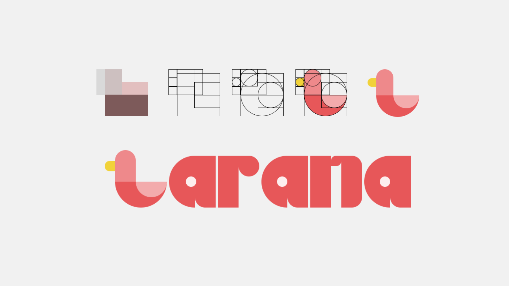
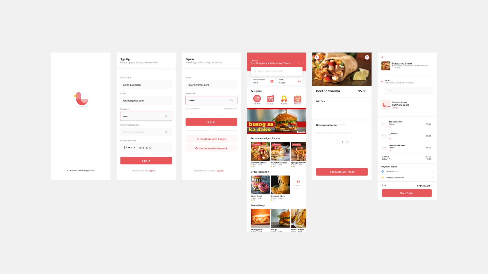

LARANA

This is the design I made for our monthly challenge. The challenge was to create a UX Design for a food delivery application. We have to follow the golden rule, and the big, small rule in designing an application. The image above is the sketch of how I created the Larana Logo using the Golden Rule. The logo is an albatross, the reason why I chose the albatross bird, because it is one of the fastest bird. The meaning of Larana is a seabird, hence the logo.

This is the UX design I made for our monthly challenge. It was inspired from Grab Food and FoodPanda.